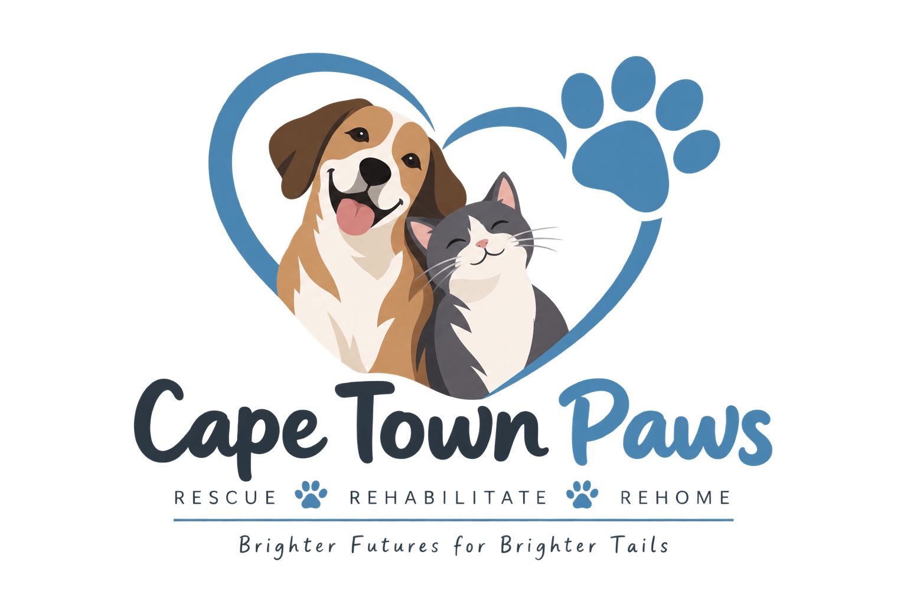

Our Mission
Our mission is to rescue and care for animals in need while helping them find safe and suitable homes.

Cape Town Paws is a non-profit animal rescue organisation based in Cape Town.
We focus on rescuing, rehabilitating and finding suitable homes for abandoned, neglected and injured animals.
We also encourage responsible pet ownership and community involvement through adoption, fostering, volunteering and donations.
Our mission is to rescue and care for animals in need while helping them find safe and suitable homes.
Our vision is to create a community where animals are treated with care and responsibility and where fewer animals are abandoned or neglected.
Cape Town Paws works with animal lovers, families, volunteers, foster families, donors, sponsors and members of the Cape Town community who want to help animals live better lives.
Get Involved